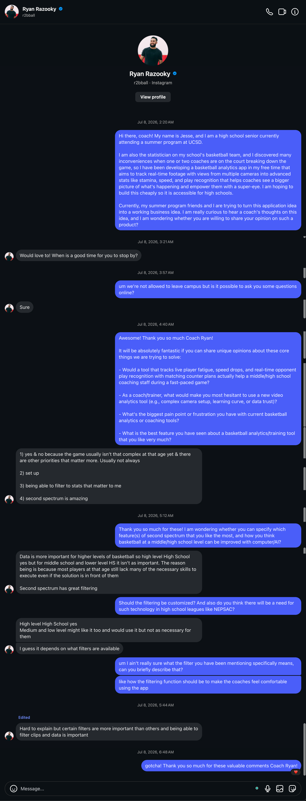

Our History & Mission
From a courtside seat to a startup accelerator win
Sitting courtside as a statistician gave me the advantage of viewing the game from an angle that nobody else has. I am not the coach worrying about what play to call, not the players worrying about where to go, and not the audience busy cheering. I sit courtside recording every possession down, which makes it very easy for me to see a pattern — such that the opponent shooter kept running to that same corner and made 3 threes in a row, and it's hard to tell the coach because the loss already happened, and we are already back on offense.
Only if the coach can kind of see it coming, and maybe he can identify it during the second made three, without taking up his time yelling plays. Some sort of technology that gives coaches an extra pair of eyes.
Though pro-leagues already implement similar tech, like Synergy Sports and Second Spectrum, they are highly prohibitive, and some of their features are way too advanced for a high school level.
That's my starting point for Voop. To create a real-time basketball analytics app designed for high school teams, preserving only the features that matter for such a level, and keeping it easy to use for coaches that are not the most professional expert with computers and numbers.
I taught myself computer vision using YOLO and OpenCV. It took months of trial and error, but eventually I built a system that could track players on the court, measure their speed and distance, and estimate fatigue levels in real time. It wasn't polished, but it is now in a very good shape.
In the summer of 2026, I brought Voop to LaunchX, a startup accelerator hosted at UC San Diego. Over two weeks, I worked with a team of four to transform the prototype into a viable product. We developed a business model, built financial projections, and refined the product based on real customer feedback.
🏆 Our team placed 1st out of 28 teams (111 students), and I personally received the Best Builder award for technical innovation.
Throughout the program and beyond, I sought feedback from coaches who know the game at a high level. I interviewed UCSD Men's Basketball Assistant Coach Cameron Barry, trainer Ryan Razooky (795K+ followers), and Coach Seals. Their insights helped me prioritize features, eliminate what didn't matter, and focus on what coaches actually need — fatigue tracking, substitution timing, and actionable in-game data.
Gallery
 Click to zoom
Click to zoom
 Click to zoom
Click to zoom
 Click to zoom
Click to zoom


Click trophy, prototype, or panel to expand · Coach conversations shown directly